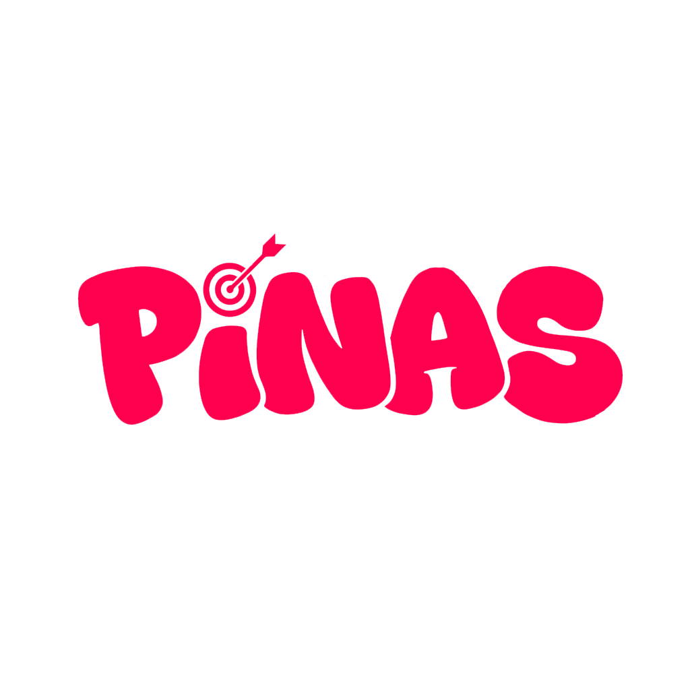

Uma apresentação direta e prática sobre como transformar pesquisas do Google e usuários do Instagram aí na sua região em clientes prontos para comprar no seu WhatsApp todos os dias.

Nós não vendemos "postzinhos" nem "anúncios aleatórios". Implementamos um ecossistema completo em 3 camadas que transforma interesse local em dinheiro no caixa:
Criamos uma página própria de 1 página que carrega em 0.8 segundos no celular. Com prova social, fotos reais da estrutura e botão flutuante de WhatsApp que segue o cliente na tela.
Conectamos os algoritmos de aprendizado profundo do Google Smart Bidding e Meta Advantage+. A IA monitora quem está no momento de compra no seu bairro e só gasta verba com quem vai fechar.
O anúncio abre o WhatsApp já com a mensagem personalizada pronta (foto da peça ou dor médica). A sua recepcionista/vendedora responde em menos de 5 minutos e fecha no Pix com facilidade.
O maior pesadelo de uma clínica é ficar com veterinários e salas de cirurgia ociosas dependendo de indicação de boca a boca. O Pinas Vet AI™ muda esse cenário:
Centro Clínico Veterinário
Quando o tutor pesquisa no Google com dor ou emergência, ele não pesquisa para passear. Ele pesquisa para passar o cartão. O funil da Pinas captura esse fluxo exato:
O alcance orgânico do Instagram morreu: você posta um look lindo e a plataforma só mostra para 3% dos seguidores. Com o Pinas Fashion Traffic AI™, você assume o controle das vendas:
Confecções e Lojas de Roupas no Brás
Enquanto o feed do Instagram esconde suas fotos, a IA da Pinas coloca seus melhores looks direto nos stories e reels de quem já costuma comprar roupas online toda semana.
Salas vazias no meio da semana e cancelamentos de última hora drenam o lucro do centro estético. O Pinas Beauty AI™ gera demanda constante:
Centro de Estética & Bronzeamento
O grande segredo do negócio de estética é que o custo de aquisição (CAC) é pago no 1º procedimento. A partir da 2ª sessão, 100% da margem vai direto para o bolso da clínica.
Você tem um serviço excelente, avaliações 5 estrelas no Maps, mas ainda não tem site nem anúncio no Google. Quem pesquisa pelo seu serviço no bairro acaba caindo no concorrente simplesmente porque ele aparece primeiro.
Agências tradicionais colocam anúncios amplos para a cidade inteira e atraem pessoas a 30km de distância que nunca vão fechar com você. A Pinas foca cirurgicamente no seu raio de atuação.
Você não precisa entender de programação, design ou tráfego. A Pinas cuida de 100% da parte técnica, estruturação e inteligência de anúncios:
Sem contratos com multas abusivas de 12 meses. O foco da Pinas é gerar resultado no primeiro mês para mantermos uma parceria duradoura:
Página rápida (< 1s), hospedada em servidores globais, feita para transformar cliques em conversas no WhatsApp.
Criação e gestão de campanhas no Google Ads e Meta Ads com inteligência de dados e otimização diária de lances.
Transparência total com métricas práticas: quantas conversas entraram, custo por lead e retorno real no caixa.
Acesso direto ao WhatsApp do Kauê. Sem telefone de SAC, sem estagiário intermediando e com respostas rápidas.
Coloque a máquina da Pinas para rodar e comece a receber clientes qualificados já nos próximos dias.